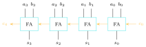

and ; chaining
and ; chaining Construction
Per bit  : generate
: generate  (a carry is born), propagate
(a carry is born), propagate  (an incoming carry passes),
(an incoming carry passes),
 full adders in a chain, . Area
full adders in a chain, . Area  , delay .
, delay .
Two's complement: an -bit word represents  . Subtraction : invert
. Subtraction : invert  , set . Overflow (signed) when .
, set . Overflow (signed) when .
Picture

 to .
to .
The carry (amber) crosses every stage: the critical path is linear in .
Intuition
Adding by hand, column by column, with the carry passed to the left: simple, small, and as slow as the number is long.
Pitfall
The worst case ( in every position, e.g. ) is rare for random data but sets the clock period, since timing analysis must assume it.